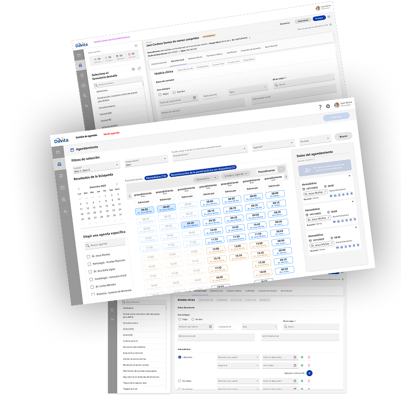
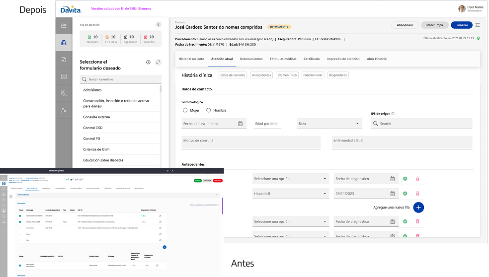
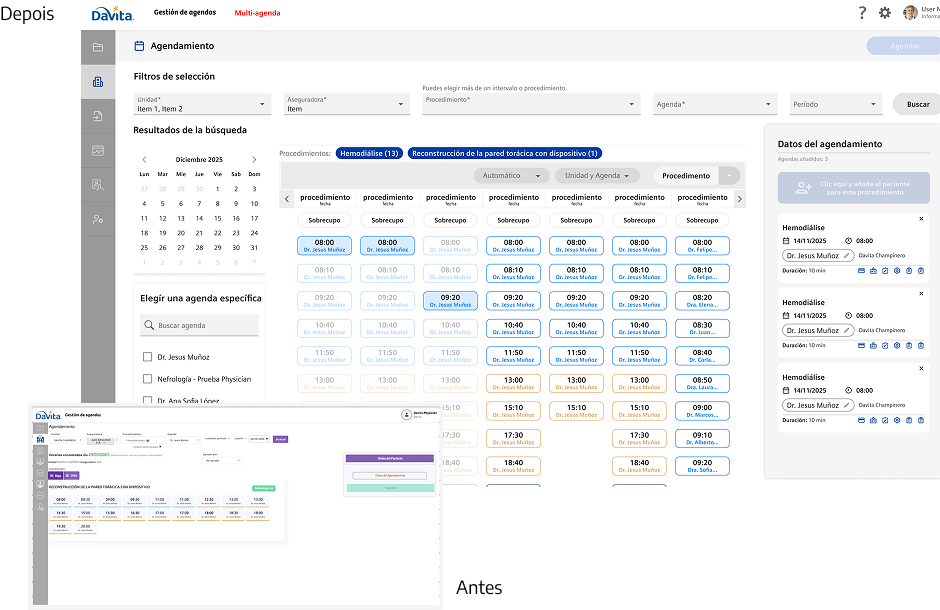

Da experiência clínica ao agendamento de procedimentos
Uma jornada de evolução digital que começou com formulários clínicos e ODDs e avançou para simplificar o agendamento de procedimentos em hemodiálise.

Simplificando o registro clínico e a gestão de agendas em hemodiálise
Em uma rotina de hemodiálise, profissionais de saúde precisam registrar informações clínicas e acompanhar vários pacientes enquanto o atendimento acontece. A experiência digital precisava apoiar esse trabalho com mais clareza e menos esforço.
O projeto começou com a revisão de formulários e ODDs, buscando tornar o registro de dados mais ágil e aproximar as interfaces do design system da Siemens. Depois, o escopo avançou para o agendamento de procedimentos, conectando pacientes, profissionais, equipamentos e disponibilidade em uma experiência mais integrada.
Facilitar o cuidado em meio à complexidade da rotina clínica
A equipe de enfermagem atendia pacientes simultaneamente e precisava coletar informações em intervalos recorrentes. Os formulários existentes exigiam interações que podiam interromper o fluxo de atendimento, enquanto diferenças entre telas dificultavam o uso consistente do sistema. Com a ampliação do escopo, surgiu outro desafio: organizar agendamentos que envolviam múltiplos procedimentos, sessões e agendas.
Das necessidades da rotina às oportunidades de produto
O trabalho começou com uma etapa de descoberta e alinhamento multidisciplinar, reunindo perspectivas de produto, design, desenvolvimento, atendimento e profissionais de saúde. A partir desse entendimento, o projeto avançou em duas frentes.
Formulários e ODDs
Estudos e propostas para simplificar o preenchimento, reduzir interações desnecessárias e organizar melhor as informações clínicas.

Agendamento
Exploração de fluxos em calendário e lista para localizar horários, combinar procedimentos e sessões e visualizar múltiplas agendas.

Uma experiência clínica consistente, do registro ao agendamento
O projeto foi desenvolvido para um cliente colombiano e conduzido em português e espanhol, conectando diferentes equipes em torno de uma experiência digital comum. Começamos reprojetando formulários e ODDs para aproximar as interfaces do design system da Siemens, mantendo consistência visual e clareza nos fluxos clínicos. Na sequência, ampliamos o trabalho para o agendamento de procedimentos.
Atualizar uma interface é organizar a transição da experiência.
Modernizar uma experiência clínica exige mais do que atualizar a interface: é preciso alinhar os fluxos às necessidades de quem presta o cuidado, manter consistência com o design system e facilitar a colaboração entre equipes que trabalham em idiomas diferentes.